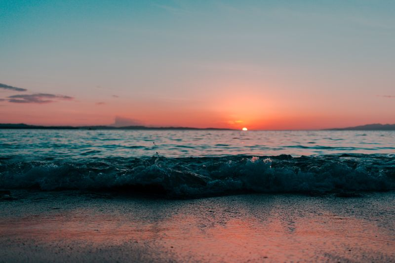
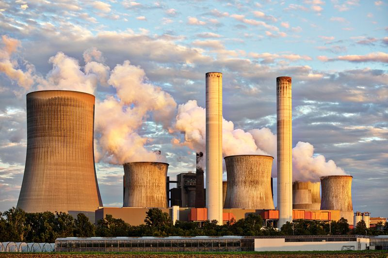
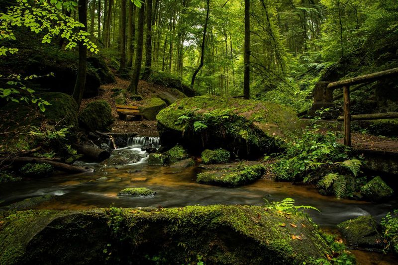

1. Le Littoral 2. Les Plateaux limoneux 3. Le Sillon Sambre-et-Meuse 4. Les Ardennes
❓ Q2 — Caractéristiques du Littoral
Cite toutes les caractéristiques du Littoral.

🏖️ La côte belge...👀 Voir la réponse
🏖️ LITTORAL :
• Situé au nord-ouest (65 km de côte)
• Terrain plat, basse altitude
• Dunes de sable
• Plages de sable fin
• Polders (terres gagnées sur la mer)
• Bordé par la mer du Nord
• Fait partie de la basse Belgique
❓ Q3 — Caractéristiques des Plateaux limoneux
Cite toutes les caractéristiques des Plateaux limoneux.
🌾 Des champs immenses et plats...👀 Voir la réponse
🌾 PLATEAUX LIMONEUX :
• Situés au centre-nord
• Relief peu marqué (plat ou légèrement ondulé)
• Sols très fertiles (limon = terre riche)
• Agriculture importante (blé, betteraves, maïs)
• Altitude moyenne (100-200m)
• Peu de forêts, beaucoup de champs
• Fait partie de la moyenne Belgique
❓ Q4 — Caractéristiques du Sillon Sambre-et-Meuse
Cite toutes les caractéristiques du Sillon Sambre-et-Meuse.
🏭 Une vallée avec une ville et une rivière...👀 Voir la réponse
🏭 SILLON SAMBRE-ET-MEUSE :
• Situé au centre de la Belgique
• Vallées creusées par la Sambre et la Meuse
• Relief vallonné
• Zone industrielle historique (charbon, acier)
• Grandes villes : Namur, Liège, Charleroi, Mons
• Beaucoup d'usines et de cheminées
• Fait la frontière entre moyenne et haute Belgique
❓ Q5 — Caractéristiques des Ardennes
Cite toutes les caractéristiques des Ardennes.
🌲 Des forêts denses et profondes...👀 Voir la réponse
🌲 ARDENNES :
• Situées au sud
• Région la plus élevée (Signal de Botrange = 694m)
• Forêts denses (sapins, chênes)
• Relief accidenté (collines, vallées profondes)
• Sols peu fertiles (peu d'agriculture)
• Rivières qui serpentent dans les vallées
• Fait partie de la haute Belgique
❓ Q6 — Quiz photo : quel ensemble ?
Regarde cette photo. C'est quel ensemble morphologique ? Justifie !

🤔 Des cheminées, de la fumée, du plat...👀 Voir la réponse
C'est le Sillon Sambre-et-Meuse ! On reconnaît : les usines, les cheminées, la zone industrielle.
❓ Q7 — Quiz photo : quel ensemble ?
Regarde cette photo. C'est quel ensemble ? Justifie !
🤔 Vue du ciel : que des arbres...👀 Voir la réponse
C'est les Ardennes ! On reconnaît : forêt dense vue d'en haut, pas de champs, relief élevé.
❓ Q8 — Quiz photo : quel ensemble ?
Regarde cette photo. C'est quel ensemble ? Justifie !
🤔 C'est plat, que des cultures...👀 Voir la réponse
C'est les Plateaux limoneux ! On reconnaît : terrain plat, grandes cultures, pas de forêt.
Les cours d'eau
❓ Q9 — Les 3 fleuves + la mer
Cite les 3 fleuves de Belgique et la mer qui borde le pays.
🌊 Les fleuves belges coulent vers...
graph LR
E["Escaut (ouest)"] --> MN["Mer du Nord 🌊"]
M["Meuse (est)"] --> MN
Y["Yser (côte)"] --> MN
👀 Voir la réponse
Les 3 fleuves : Escaut, Meuse, Yser. La mer : mer du Nord.
❓ Q10 — Situer les fleuves
Par où passent l'Escaut, la Meuse et l'Yser ?
🌊 Chaque fleuve a son trajet...👀 Voir la réponse
Yser : ouest, près de la côte. Escaut : ouest, passe par Gand et Anvers. Meuse : est, passe par Namur et Liège.
❓ Q11 — Amont et Aval
C'est quoi l'amont et l'aval ?

💧 L'eau coule du haut vers le bas...
graph TD
A["⬆️ AMONT = vers la SOURCE = en HAUT"] -->|"courant ↓"| B["⬇️ AVAL = vers la MER = en BAS"]
👀 Voir la réponse
Amont = vers la source (en haut, d'où vient l'eau). Aval = vers la mer (en bas, où va l'eau).
❓ Q12 — Rive droite, rive gauche
Comment détermine-t-on la rive droite et la rive gauche ?
🏞️ 2 berges = 2 rives !
graph TD
T["🧍 Tu regardes vers l'AVAL ⬇️"]
T --> RG["⬅️ Main gauche = RIVE GAUCHE"]
T --> RD["➡️ Main droite = RIVE DROITE"]
👀 Voir la réponse
Tu te places dans le sens du courant (vers l'aval). Ta gauche = rive gauche. Ta droite = rive droite.
❓ Q13 — Le lit et le versant
C'est quoi le lit et le versant d'une rivière ?
💧 L'eau coule dans un creux...👀 Voir la réponse
Le lit = le creux où coule l'eau. Le versant = la pente qui descend vers la rivière.
❓ Q14 — Vocabulaire complet
Cite tous les mots de vocabulaire liés au cours d'eau.
💧 Connais-tu tous ces mots ?
graph TD
S["🏔️ SOURCE (début)"] --> C["💧 Cours d'eau"]
C --> E["🌊 EMBOUCHURE (fin, vers la mer)"]
C --- LIT["LIT = creux"]
C --- RG["← Rive gauche"]
C --- RD["Rive droite →"]
C --- V["VERSANT = pente"]
👀 Voir la réponse
Amont, aval, source, embouchure, lit, rive droite, rive gauche, versant.
Belgique : altitude et villes
❓ Q15 — Basse, Moyenne, Haute Belgique
C'est quoi la basse, moyenne et haute Belgique ? Où sont-elles ?
Du plat au nord aux collines au sud
graph LR
BB["🏖️ BASSE Nord 0-100m Plaines"] --> MB["🌾 MOYENNE Centre 100-300m Plateaux"]
MB --> HB["🌲 HAUTE Sud 300-694m Ardennes"]